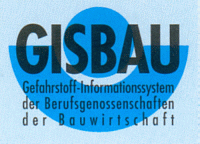
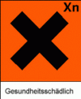

Informationen der Berufsgenossenschaften der Bauwirtschaft
 |
Trichlorethylen
|
|
Irreversibler Schaden möglich. (R
40) Gas / Rauch / Dampf / Aerosol nicht einatmen.
(S 23) Bei der Arbeit geeignete Schutzhandschuhe und Schutzkleidung tragen. (S 36/37) |
Trichlorethylen ist eine farblose
Flüssigkeit mit einem süßlichen Geruch. Sie ist mit
allen üblichen organischen Lösemitteln mischbar, jedoch
in Wasser nur gering löslich.
Trichlorethen ist eines der gebräuchlichsten Reini-gungs- und Entfettungsmittel. Es dient ebenfalls als Extraktionsmittel für natürliche Fette, Harze, Öle und Wachse.
(chemische Gruppe: Chlorkohlenwasserstoffe)
Grenzwerte und Einstufungen
|
Konzentrationsmessung mit
Prüfröhrchen z. B. Compur (550 234, Typ: 134 (SA);
Dräger (67 28541, Typ: Trichlorethylen 2/a);
Auer (5085-842, Typ: Tri.-5).
Einatmen, Verschlucken (Essen, Trinken oder Rauchen mit beschmutzten Händen) oder Aufnahme über die Haut kann zu Gesundheitsschäden führen. Kann die Atemwege, Verdauungswege und Augen reizen: z. B. Brennen, Kratzen.
Kann zu Lungenödem führen.
Schwindel, Kopfschmerzen, Benommenheit bis zur Bewußtlosigkeit oder andere Hirnfunktionsstörungen können auftreten.
Kann zu Rauschzustand führen.
Schädigung von Leber und Niere möglich.
Entfettet die Haut.
Eine krebserzeugende Wirkung wird
vermutet!
Im Arbeitsbereich keine Lebensmittel
aufbewahren sowie weder essen, trinken, schnupfen noch rauchen!
Berührung mit Augen, Haut und Kleidung
vermeiden!
Nach Arbeitsende und vor Pausen Hände
gründlich reinigen!
Hautpflegemittel nach der Arbeit verwenden
(rückfettende Creme).
Durchnäßte Kleidung wechseln und
trocknen lassen!
Arbeiten bei Frischluftzufuhr, vor allem im Bodenbereich, da Dämpfe schwerer als Luft.
Auftretende Dämpfe direkt an der Entstehungsoder Austrittstelle absaugen.
Gefäße nicht offen stehen lassen.
Vorratsmenge am Arbeitsplatz auf einen
Schichtbedarf beschränken.
Waschgelegenheit im Arbeitsbereich vorsehen.
Augendusche oder Augenspülflasche bereitstellen. Beim Ab- und
Umfüllen Verspritzen vermeiden.
Augenschutz: Schutzbrille.
Handschutz: Handschuhe aus Viton. Beim Tragen von Schutzhandschuhen sind Baumwollunterziehhandschuhe empfehlenswert!
Hautschutz: Für alle unbedeckten
Körperteile fettfreie oder fettarme
(ÖI-in-Wasser-Emulsion) Hautschutzsalbe verwenden!
Atemschutz: Atemschutz bei
Grenzwertüberschreitung, z. B. an Vollmaske:
Gasfilter A1 (braun) bis 1000 ml/m3 (ppm)
Gasfilter A2 (braun) bis 5000 ml/m3 (ppm)
Gasfilter A3 (braun) bis 10000 ml/m3 (ppm)
Körperschutz: Antistatische Schutzkleidung, z. B. Kleidung aus Baumwolle und Schuhe mit antistatischen Sohlen.
Bei jeder Erste-Hilfe-Maßnahme: Selbstschutz beachten (z. B. Handschutz, Atemschutz); immer auch Arzt verständigen!
Nach Augenkontakt: 10 Minuten unter
fließendem Wasser bei gespreizten Lidern spülen oder
Augenspüllösung nehmen. Bei Schmerzen möglichst
Chibro-Kerakain einträufeln. Immer Augenarzt aufsuchen!
Nach Hautkontakt: Verunreinigte
Kleidung sofort ausziehen.
Mit viel Wasser und Seife reinigen. Kein Verdünner o. ä.
verwenden.
Nach Einatmen: Person an die frische
Luft bringen. Atemwege freihalten: Zahnprothesen, Fremdkörper
(Erbrochenes) entfernen.
Bei Bewußtlosigkeit Lagerung in stabiler Seitenlage. Atmung und Puls überwachen!
Bei Atem- oder Herzstillstand:
künstliche Beatmung und Herzdruckmassage.
Möglichst rasch 5 Hübe
Dexamethason-Spray (z. B. Auxiloson) einatmen lassen. Dies alle 10
Minuten bis zum Beginn der ärztlichen Behandlung
wiederholen!
Nach Verschlucken: Kein Erbrechen
herbeiführen. Bei Bewußtsein in kleinen Schlucken viel
Wasser trinken lassen.
Gabe von medizinischem Kohlepulver, keine
Hausmittel (Milch, Alkohol usw.)
Dämpfe sind schwerer als Luft.
Kunststoffe werden angegriffen.
Greift folgende Werkstoffe an: Aluminium, andere Leichtmetalle und deren Legierungen.
Reagiert mit Alkali-, Erdalkalimetallen, diversen Metallpulvern und -spänen, sowie Basen.
Zersetzt sich bei Erhitzen/Verbrennen in
gefährliche Gase.
Wenn 1/4 des Grenzwertes überschritten wird, dürfen Jugendliche unter 16 Jahren mit Trichlorethylen nicht beschäftigt werden; Jugendliche ab 16 Jahren dürfen mit Trichlorethylen nur dann beschäftigt werden, wenn dies zur Erreichung des Ausbildungszieles erforderlich ist und sie durch einen Fachkundigen beaufsichtigt werden.
Personen, die Umgang mit diesem Stoff/Produkt haben, sind gegebenenfalls (z. B. bei Überschreitung der Auslöseschwelle) nach:
zu untersuchen.
Nicht in Ausguß oder Mülltonne
schütten. Abfälle nicht vermischen! Zur
ordnungsgemäßen Beseitigung bzw. Rückgewinnung in
beständigen, verschließbaren und gekennzeichneten
Gefäßen getrennt sammeln.
Restmengen sind unter Beachtung der
örtlichen Vorschriften einer geordneten Abfallbeseitigung
zuzuführen! Abfallart wie Abfallschlüssel-Nr. (55213)
nach LAGA-Abfallartenkatalog.
Behälter dicht geschlossen an einem kühlen, gut gelüfteten Ort lagern.
Nicht in Behältern aus Aluminium lagern.
Nach Umfüllen Behälter wie
Originalgebinde kennzeichnen.
Darf nicht in die Hände von Kindern gelangen.
Für Betriebsfremde unzugänglich
aufbewahren.
Nach Verschütten mit saugfähigem,
unbrennbarem Material (z. B. Kieselgur, Blähglimmer, Sand)
aufnehmen und wie unter Entsorgung beschrieben behandeln.
Produkt ist nicht brennbar, im Brandfall Löschmaßnahmen auf Umgebung abstimmen.
Bei Brand in der Umgebung Behälter mit
Sprühwasser kühlen.
Bei Brand entstehen gefährliche
Gase/Dämpfe. Brandbekämpfung nur mit
umgebungsluftunabhängigem Atemschutzgerät und
Schutzkleidung. Das Eindringen in Boden, Gewässer und
Kanalisation muß vermieden werden (stark
wassergefährdend - WGK 3).
Copyright by GISBAU
Vervielfältigung erwünscht! Stand: 15.11.95